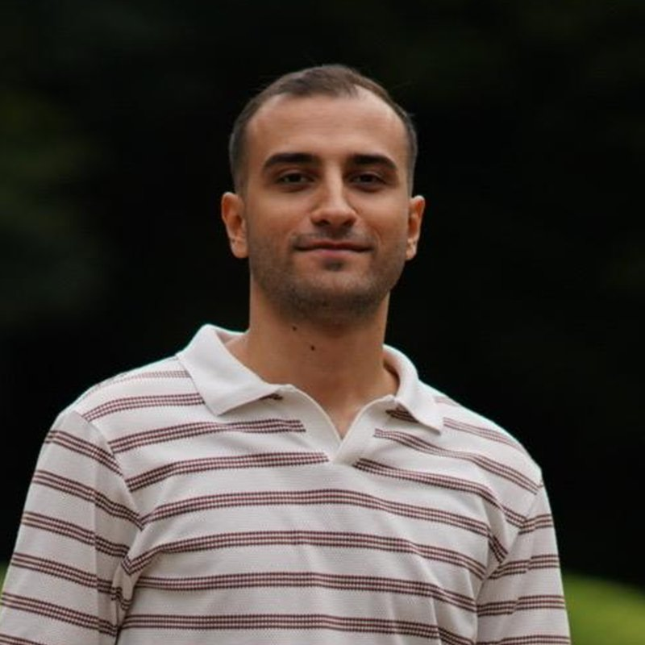

Available for new roles · İzmir
Hi, I'm Korhan Ergün TUNÇELLİ, computer engineer
I build web applications with C#, ASP.NET MVC and React. I graduated from Tekirdağ Namık Kemal University with a 3.31 GPA.

- GPA
- 3.31
- Internships
- 3 companies
- Technologies
- 15
- Projects
- 4
About me
I graduated from Tekirdağ Namık Kemal University with a 3.31 GPA. Today I work in web and backend software development and databases, and I enjoy solving problems as part of a team.
- Location
- İzmir
- GPA
- 3.31 / 4
- Languages
- EN B2 · DE A1
- Status
- Available
- Agile
- Teamwork
- Leadership
- Technical documentation
- Problem solving
My internship experience. Three internships at healthcare, telecom and automotive companies.
-
JULY – AUGUST 20244 pages ready
 Doctor notesReact
Doctor notesReact- Nurse notesReact
- Patient dataReact
- Data tablesJavaScript
CEIBA Tele ICU
Software development internship
I built the tables and note sections on the doctor notes, nurse notes and patient data pages with React.js.
-
FEBRUARY – JUNE 2024
Turkcell Global Bilgi
Long-term internship
I built Python and SQL solutions for billing processes and the complaints about them, and analysed data with machine learning.
-
AUGUST – OCTOBER 2022
BorgWarner
IT summer internship
I made hardware and software work together through network protocols, system setups and Raspberry Pi applications.
My projects. GitHub repositories and a TÜBİTAK-supported model.
My skills. 15 technologies in four groups.
My designs. Procreate portraits and Twitch stream packages.
Contact. One email is enough.
Write to me about new projects, collaborations or just to say hello; my other accounts are here too.